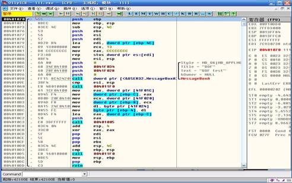
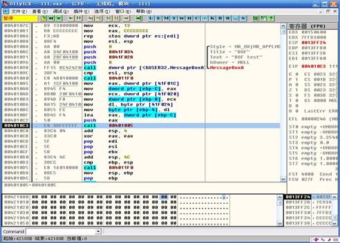
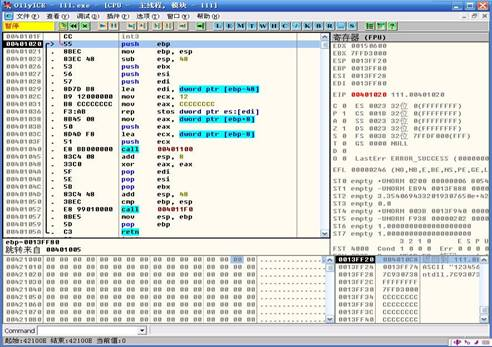
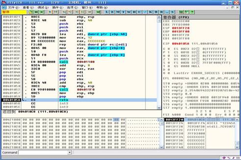
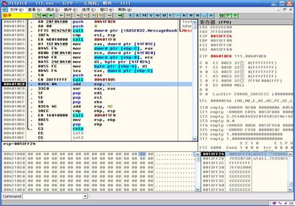
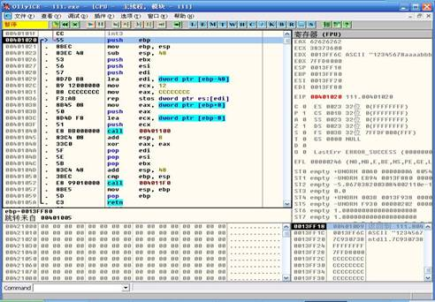
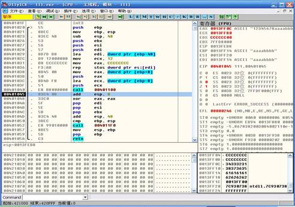
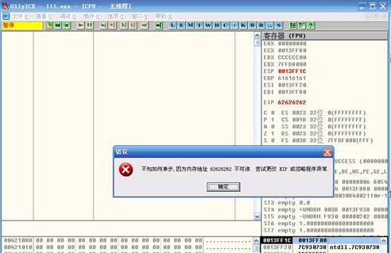

1、 复习逆向基本知识，掌握栈在程序中的使用和结构。
2、 学习缓冲区溢出基本原理，阅读缓冲区溢出基础文档，了解栈溢出的攻击过程。
3、 回忆Ollydbg用法，会使用OD调试漏洞。
1、 根据视频和实验指导书，一步步的实践和理解缓冲区溢出的原理。
2、 根据实验内容，回答实验问题。完成拓展训练，写出实验报告。
1、栈溢出简述
处理器在函数调用时，将函数的参数、返回地址(即进行函数调用的那条指令的下一条指令的地址)及基址寄存器EBP压入堆栈中，然后把当前的栈指针ESP作为新的基地址。如果函数有局部变量，则函数会把堆栈指针ESP减去某个值，为需要的动态局部变量腾出所需的内存空间，函数内使用的缓冲区就分配在腾出的这段内存空间上。函数返回时，弹出EBP恢复堆栈到函数调用前的地址，弹出返回地址到 EIP 以继续执行原程序。程序是从内存低端向内存高端按顺序执行，由于堆栈的生长方向与内存的生长方向相反，因此在堆栈中的数据超过预先给堆栈分配的容量时，就会出现堆栈溢出，溢出发生后，会产生三种结果，一是程序运行失败，二是程序没有影响，继续运行，三是被黑客利用，转入黑客精心构造的攻击代码中运行。
2、编译一个简单程序例子
将下列代码用VC6.0编译以下代码，生成DEBUG版程序
#include <stdio.h>
#include <windows.h>
#include <string.h>
int fun(char *cpybuf)
{
char Buf[8];
strcpy(Buf,cpybuf);
return 0;
}
int main()
{
MessageBox(NULL,”BOF test”,”BOF”,MB_OK);
char buff[]=”12345678”;
fun(buff);
return 0;
}
3、在OD中来到程序的入口处
以下是使用Ollydbg工具反汇编后的动态跟踪截图，清楚显示了这个过程。
首先了解一个基本知识：
程序在执行到调用函数fun(buff)语句的时候，往往用指令call address来完成调用，call指令会首先将call这条指令的紧接着的下一句汇编指令代码的地址压入堆栈保存，当fun()函数执行完毕后，会再将刚才压入堆栈的地址弹回EIP，以便在执行完fun()函数时能够正确返回主程序继续执行。本知识在逆向工程实验中已经提及。

图1 main函数反汇编全图
图1是main()的反汇编情况，对比代码我们可以知道在地址0040108A-00401098调用了动态链接库User32.dll中的API函数MessageBox()，之后的连续的MOV指令则是初始化数组操作，并将初始化好的数组地址传递给EAX，由它做参数传递。00401005处则是我们的fun函数的执行代码。
4、单步跟踪到call fun()的位置，观察堆栈和参数传递的情况

图2 fun函数入口
如图2单步跟踪至004010C3，即将进入fun()函数，我们仔细注意堆栈的变化情况。F7单步跟踪进入到fun()函数内部，如图3。

图3 fun函数反汇编
图3显示了整个fun()函数的反汇编代码情况。此刻我们注意堆栈的栈顶的情况，栈顶0013FF20存放内容为004010C8，这个正是我们图2中main()函数中执行fun()函数的下一句代码的地址，紧接着继续跟踪，看是否这个栈顶的内容是用于返回main()函数。
5、单步跟踪到fun()的最后一条指令retn查看程序是如何回到main()函数的

图4 fun函数反汇编
单步F7执行至0040105A，指令为RETN，查询汇编指令手册可知，是将栈顶值出栈给EIP。如图4

图5 main函数反汇编
再次单步跟踪，观察EIP的值正是004010C8，返回了fun()的下一条指令。如图5
可见，call，retn这2个指令是成对出现的，call在跳转到相应的函数执行的同时会保留原来指令流程的中的下一条指令的地址，而函数执行完毕后，又由retn来恢复到原来的指令流程中。
6、开始攻击
修改源代码中的buff[]初始化定义。
//char buff[]=”12345678”;
char buff[]=”12345678aaaabbbb”;
增加buff的长度。
再次导入OD单步跟踪到fun()程序，同时注意栈顶的返回地址。

图6 fun函数反汇编
如图6，这是改变数组内容后的fun()的反汇编代码，注意到栈顶0013FF18存放004010D9，这个是main()中执行完fun()函数后执行的代码。
7、strcpy执行
单步执行到Call 00401100，这里执行的是函数strcpy(),我们来看执行strcpy后的结果。

图7 fun函数反汇编图四
如图7，栈0013FF18的值不再是004010D9，而是62626262，再注意看0013FF0C-0013FF18的内容，不难知道。这个就是我们源数组的值。
8、攻击发生
继续单步执行到retn指令，栈顶正是62626262，如果再执行EIP->62626262，由于62626262不存在内容导致程序执行出错，如图8。攻击发生。

图8 堆栈溢出
（1）仔细领会栈溢出时候的各个细节，分析溢出发生的原因。并思考如何避免发生栈溢出。
（2）在不改变代码，只修改bufff[]的内容情况下使程序运行时候弹出“PASS”的对话框。
#include <stdio.h>
#include <windows.h>
#include <string.h>
int fun2()
{
char Buf[8];
MessageBox(NULL,”You Win”,”PASS”,MB_OK);
return 0;
}
int fun(char *cpybuf)
{
char Buf[8];
strcpy(Buf,cpybuf);
return 0;
}
int main()
{
MessageBox(NULL,”BOF test”,”BOF”,MB_OK);
char buff[]=”12345678”;
fun(buff);
return 0;
}
缓冲溢出攻击是一种经典的也是最具挑战性的攻击方式。是黑客用于渗透对方主机的有利武器，相信通过本次学习同学对溢出有了更深的认识，对将来无论是对从事代码开发还是安全相关工作都会起到很大的帮助作用。